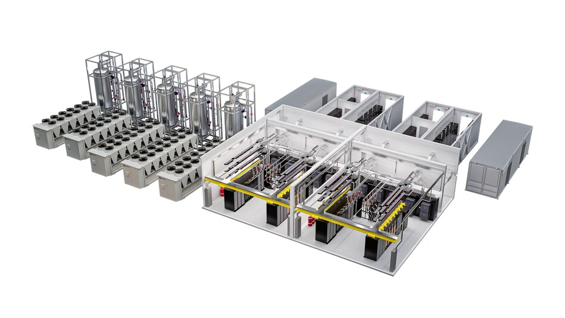

Vertiv's backlog has crossed $15 billion. That number was roughly half that size a year ago. More than doubled. In twelve months. For a company where approximately 80% of revenue comes from data center customers, this backlog is not a lagging indicator of past demand. It is a forward-looking measure of how much cooling and power infrastructure the industry needs built over the next two to three years, and the answer is: vastly more than current capacity can deliver.
BNP Paribas just initiated coverage with an outperform rating and a $345 price target. That represents a roughly 15% premium over the current trading price and sits well above the Wall Street consensus of $304 according to FactSet. The stock is already up approximately 90% in 2026. BNP is arguing there is more room to run.
The headline number is the backlog. The more revealing number is the book-to-bill ratio of roughly 3x. For every dollar of revenue Vertiv ships, three dollars of new orders come in the door. In most industrial businesses, a book-to-bill above 1.2x is considered strong. Above 1.5x signals a genuine demand surge. At 3x, Vertiv is booking orders faster than it can possibly fulfill them, and the gap between incoming demand and shipping capacity is widening.
This ratio tells you several things at once. First, customers are placing orders further in advance than they ever have before. Data center operators that used to order cooling equipment 6 to 9 months ahead of need are now placing orders 18 to 24 months out because they know lead times have stretched and they cannot afford to be caught without cooling infrastructure when their facilities come online. Second, there is no pricing pressure. When demand exceeds supply by this margin, the vendor sets the terms. Vertiv's margins will expand.
Third, and this is the part that matters for the broader cooling market, Vertiv cannot serve everyone. A 3x book-to-bill means customers are being told to wait. Some of those customers will wait. Others will look for alternatives. The companies that can deliver cooling equipment on shorter lead times, even if the product is less proven or the support infrastructure is thinner, will capture business that Vertiv physically cannot fulfill. This is how market share shifts in constrained supply environments.
The BNP Paribas research note makes an argument that goes beyond Vertiv's current financial performance. The analysts argue that cooling content per data center is structurally rising because higher-density AI clusters are driving a step-change in thermal management requirements. This is the right framing. The dollar value of cooling equipment per megawatt of IT load is increasing, not just the total number of megawatts being built. Every rack that goes from 10 kW to 40 kW to 100 kW requires more cooling hardware per unit of compute, and the complexity of that hardware is increasing as the industry transitions from air to liquid.
In a traditional air-cooled data center, the cooling infrastructure might represent 15 to 20% of the total facility cost. In a high-density liquid-cooled AI facility, that number is climbing toward 25 to 30%. The cooling plant is getting larger, more complex, and more expensive relative to the rest of the facility. For a company like Vertiv that sells cooling as its core product, this structural shift means revenue per customer grows even if the total number of customers stays flat.
A $15 billion backlog at current revenue run rates gives Vertiv visibility well into 2028 and arguably through 2030. That is extraordinary for a manufacturing business. Most industrial companies operate with 6 to 12 months of backlog. Vertiv has three to four years of committed orders. The risk of a demand shortfall in any given quarter is effectively zero. The risk is entirely on the execution side: can Vertiv build factories fast enough, hire enough skilled workers, and manage its supply chain tightly enough to convert that backlog into shipped product?
The manufacturing capacity question is real. Vertiv has been expanding production facilities in the Americas, Europe, and Asia, but building a factory that produces precision cooling equipment takes 18 to 24 months from groundbreaking to first production. The demand surge started in 2024. The capacity expansions that Vertiv initiated in response are just now coming online. There will be a period in 2026 and 2027 where order intake continues to outpace production capacity. The backlog will keep growing before it starts to shrink.
Vertiv's 80% data center revenue concentration is both its greatest strength and its most obvious risk factor. The company is the purest play on data center cooling and power infrastructure in public markets. Schneider Electric, its closest competitor in cooling, generates less than 20% of total revenue from data centers. Carrier and Johnson Controls have data center divisions but are primarily HVAC companies. Vertiv is all-in on data centers in a way that no other large-cap industrial company matches.
That concentration means Vertiv's stock trades as a proxy for data center capital spending. When Meta, Microsoft, Google, and Amazon announce capex increases, Vertiv goes up. When tariff fears or recession concerns cause those companies to pause, Vertiv goes down. The 90% stock gain in 2026 reflects the market's view that hyperscale capex will continue accelerating. The $345 price target from BNP Paribas reflects a view that the acceleration has further to go.
For the cooling industry specifically, Vertiv's backlog is the most important data point available. It is a direct, real-time measure of how much cooling infrastructure the world's largest data center operators have committed to purchasing. When that number doubles in a year, the message is unambiguous. The demand for cooling equipment is growing faster than anyone, including Vertiv, expected. The companies that can manufacture and deliver cooling systems at scale will define this market cycle. Vertiv is the incumbent. The backlog proves the position.